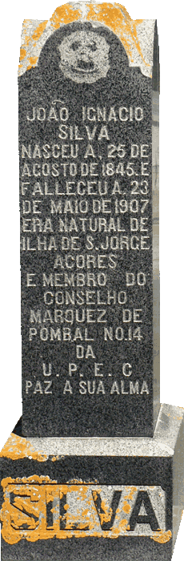

|  |
originally Mill Valley, Marin County, California
| ||||
|
The earliest Portuguese came to Marin County to work in fishing, farming, dairying, commerce, industry (such as boat building in Old Town Sausalito), and even the lumber industry. Take a ride down Caledonia Street in Sausalito. The modern building at 511 Caledonia is modestly marked I.D.E.S.S.T. (Irmandade Do Dovino Espirito Santo E Da Santissma Trinidade, or the Brotherhood of the Holy Ghost and Blessed Trinity). It is sometimes called the Holy Ghost Hall. It began with the Festa do Espírito Santo (Festival of the Holy Ghost) in 1887. In 1888, the Portuguese immigrants built a chapel and meeting hall on Filbert Street, then in 1954, the hall moved to Caledonia Street. This I.D.E.S.S.T. hall is the direct cultural descendent of the original Portuguese immigrants to southern Marin County. When João (John) Ignacio Silva died, his wife purchased the Lot for John's burial, John already belonged to U.P.E.C., a Portuguese fraternal benefit society. The U.P.E.C. probably paid for the monument. That monument displays the U.P.E.C. emblem. From The Portuguese in the United States; "1880...Council No. 1 of the União Portuguesa do Estado da Califórnia (Portuguese Union of the State of California, U.P.E.C.) was established in San Leandro. U.P.E.C. grew tremendously over the years and became one of the most prestigious and largest associations of its kind."Many Portuguese names can be found on the gravemarkers in Sausalito Section of Forever Fernwood, especially in the northwest part of the ridge. Some of these Portuguese immigrants often came from St. George Island, Azores and a few gravemarkers so state the homeland of the immigrant in the Portuguese "Ilha de S. Jorge." The religious the affiliation of those immigrants would be Catholic.
Notes :: |
||||||||||
![John Perry Gerivazio, died 1911.
His Wife Mary
[Mary Perry Gerivazio]
died 1931.
Mary](p1060343.jpg)
{kind=link}
{kind=link}
{kind=link}
{kind=link}
{kind=link}
{kind=link}
{kind=link}